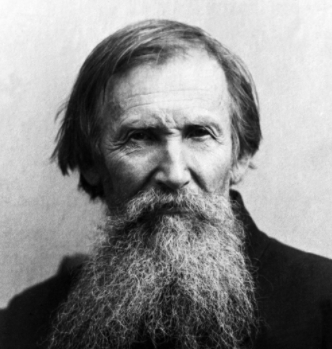

|  |
Васнецов В.М. 1848-1926– Русский художник-живописец и архитектор, мастер исторической и фольклорной живописи. Васнецов является основоположником «неорусского стиля», преобразованного из исторического жанра и романтических тенденций, связанных с фольклором и символизмом. Творчество художника сыграло важную роль в развитии российского изобразительного искусства от эпохи передвижничества к стилю модерн. Действительный статский советник. |